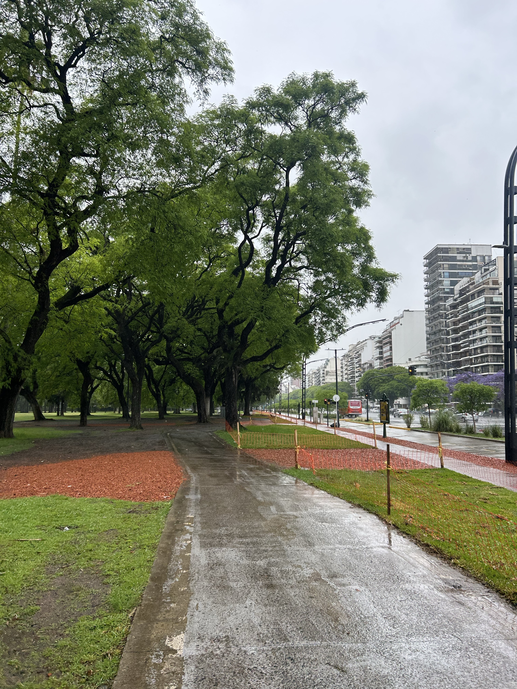
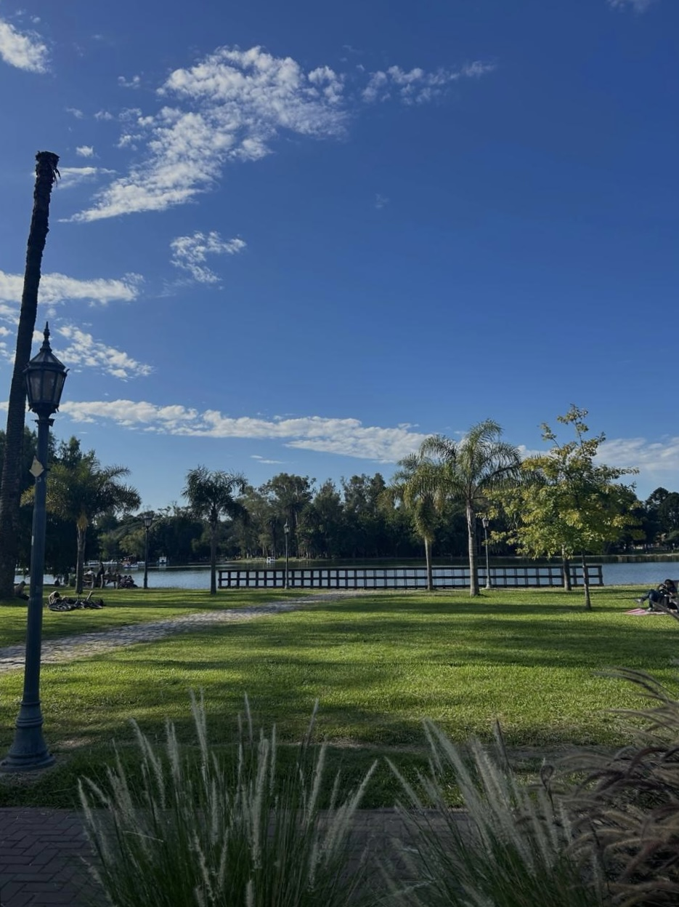
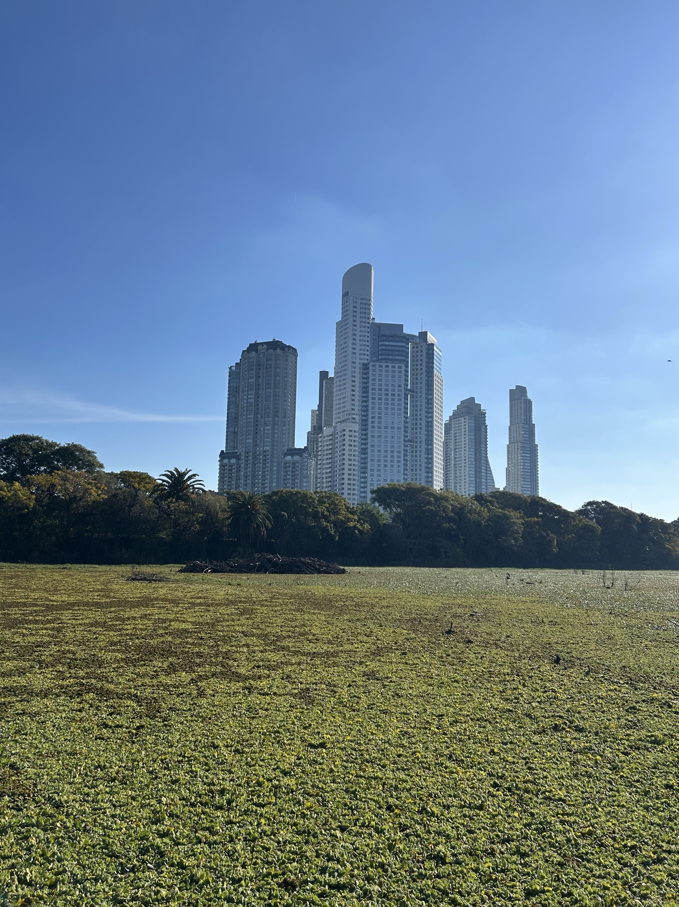

Explorá los circuitos

Av. Libertador & Alcorta
Un clásico recorrido urbano por las avenidas más amplias de la ciudad, rodeado de museos y espacios verdes.
Ver más
El Rosedal
Un espacio natural en el corazón de Palermo, con senderos rodeados de árboles y lagos.
Ver más
Lago de Regatas
Un circuito tranquilo alrededor del lago, ideal para correr en contacto con la naturaleza.
Ver más
Reserva Ecológica
Naturaleza pura a pasos del centro. Senderos de tierra con vistas al Río de la Plata.
Ver más